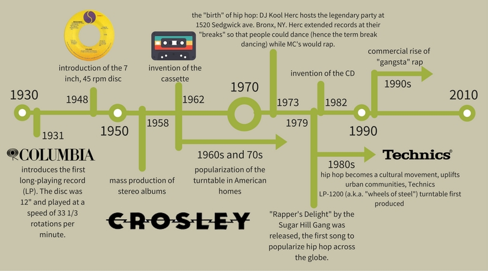

In 1877 Thomas Edison accidentally invented the Phonograph, a machine that both recorded and replayed sound. Meaning "sound writer," the device was created as a result of experiments at the intersection of Edison's Telegraph and Telephone. The Phonograph would eventually lead to the production of the Gramophone, and subsequently the modern turntable that many of us know today.
Here is Edison pictured with his second model of the Phonograph (1878). ©Library of Congress
Edison's Phonograph operates in a very similar manner to modern decks. Sound would vibrate a diaphragm that was connected to a stylus, and with each vibration the stylus would indent a rotating, round piece of thin metal (usually tin foil). To reproduce the sound, the process would be repeated backwards, so the indentations in the rotating metal disk would vibrate the stylus, and, in turn, the diaphragm would produce sound.
This is a patent for Edison's Phonograph, which he originally called the "Speaking Machine." ©Google Patents
In 1895 the German American inventor Emil Berliner introduced the Gramophone. His invention was similar to Edison's however it utilized a flat disc (made of rubber or shellac) instead of a cynlindrical, metal one. Vinyl discs later became the standard format for Berliner's device, and the Gramophone became a huge success with the American public.
Here is Berliner pictured with his Gramophone. ©Britannica
How did we get the turntable we know today? How was Hip Hop born?
here's a quick look at how it all happened:
Test Your Knowledge!
Scroll down to complete a short quiz.
check out this video of an awesome turntablist, Just Blaze!
Graphics by Gabi Bulgarelli
Information from the Library of Congress, PBS, and Gibson.